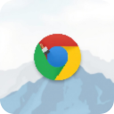

Image, GIF & MP4
Upload a file or paste a direct media URL to choose your wallpaper.

Custom Web BackgroundTransform the web with your own image, GIF, or video. Follow these three simple steps to get started.
TRY IT HERE
This preview is for learning. Changes here do not modify your browser settings.
Large panels and navigation use 5 px glass blur. Small text surfaces stay sharp.
Auto follows your device theme.
GET STARTED IN 3 STEPS
All settings are available by clicking the extension icon in the browser toolbar.
Click Choose File to use a JPG, PNG, GIF, or MP4 from your device.
ORPaste a media link into the URL field, then click Apply URL.
Glass UI gives page backgrounds a translucent finish while keeping buttons and inputs clear. Adjust Blur and Dim; Auto chooses a white or black overlay from your device theme.
Click Apply & Save. The extension starts with 5 px blur and 75% dim. Refresh a website tab if the effect is not immediately visible.
EXPLORE THE SETTINGS
Upload a file or paste a direct media URL to choose your wallpaper.
Translucent page surfaces reveal the wallpaper while controls remain usable.
Blur softens the wallpaper; dim adds a black, white, or custom color overlay.
Auto uses black on dark devices and white on light devices, following theme changes.
Optional text correction helps neutral text remain legible on the chosen background.
Dialogs, menus, forms, and floating panels keep their original backgrounds automatically.
Controls can have gentle hover motion. The wallpaper fades in once when it changes or you navigate, without zooming or pulsing.
Disable the effect from the popup without deleting your wallpaper or settings.